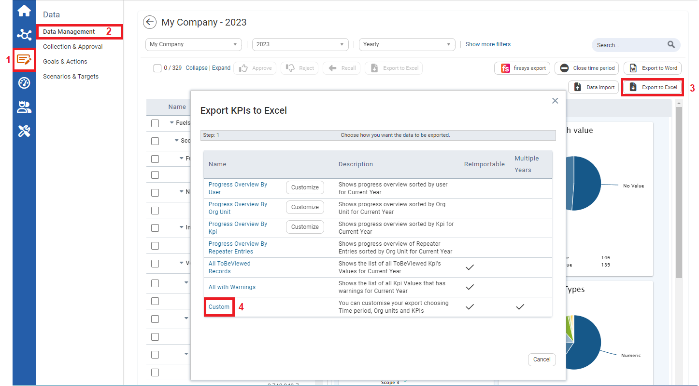
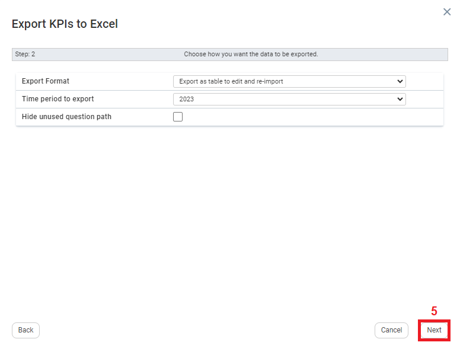
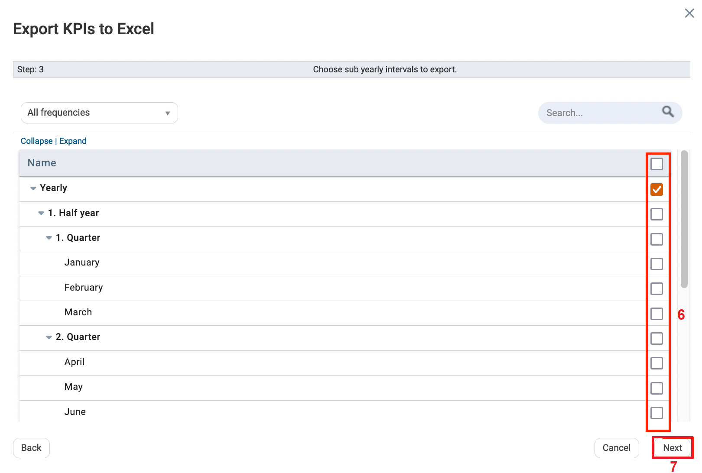
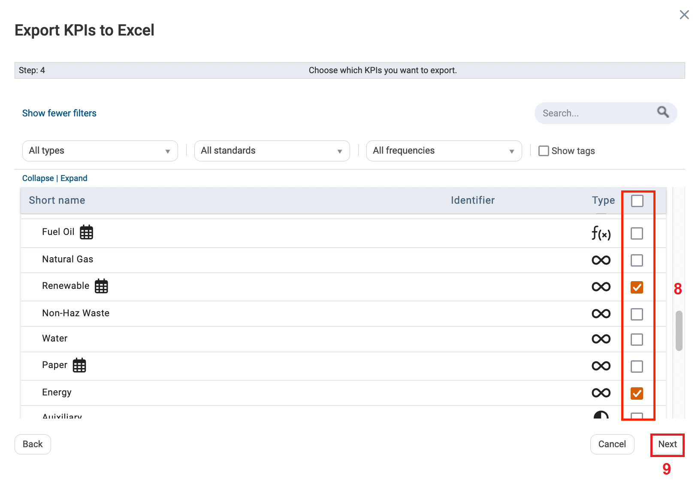
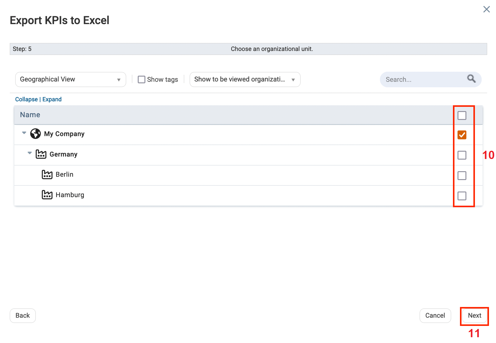
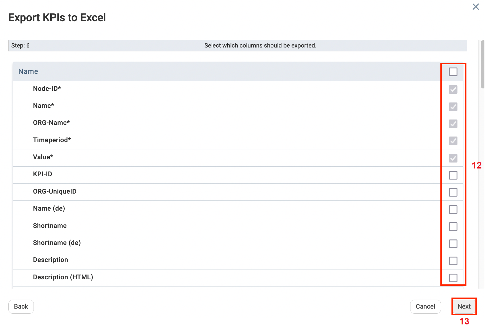
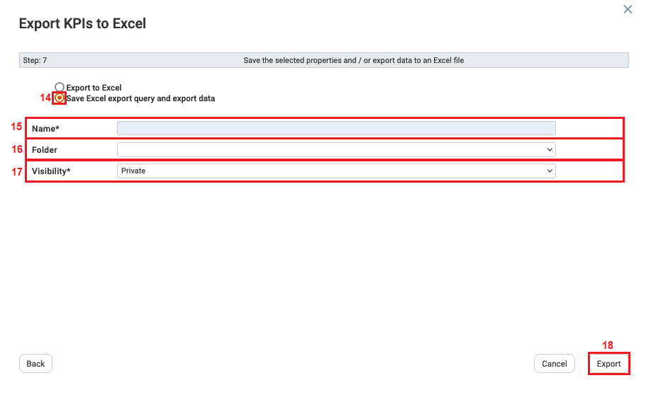
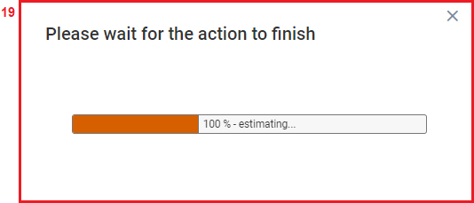

Saving Excel Export Queries
You can export Excel queries as many times you would like to and save them locally. This allows users to capture and store frequently used queries and retrieve them easily, reducing manual input time.
To Save Excel Export Queries:

| 1 | On the Left navigational panel, click Data. |
| 2 | Click Data Management. |
| 3 | Click Export to Excel. The Export KPIs to Excel window opens. |
| 4 | Click Custom. |

| 5 | Click Next. |

| 6 | Select a sub-yearly intervals to export. |
| 7 | Click Next. |

| 8 | Select the KPIs to export to Excel. |
| 9 | Click Next. |

| 10 | Select an Organizational Unit. |
| 11 | Click Next. |

| 12 | Select Columns that you want included in your Excel export queries. |
| 13 | Click Next. |

| 14 | Click Save Excel export query and export data. |
| 15 | Fill in the Name textbox. |
| 16 | Click the Folder dropdown textbox and select an existing folder name or click Other. If Other is selected the Folder textbox allows you to type in a folder name. |
| 17 | Click the Visibility textbox and select who you would like to grant visibility for the exported excel query and data.
|
| 18 | Once Visibility is selected, click Export. |

| 19 | A prompt displays, “Please wait for the action to finish”. Once the download bar on the prompt reaches 100% in terms of downloading the exported excel query, the prompt disappears. The Excel query and data are exported. |